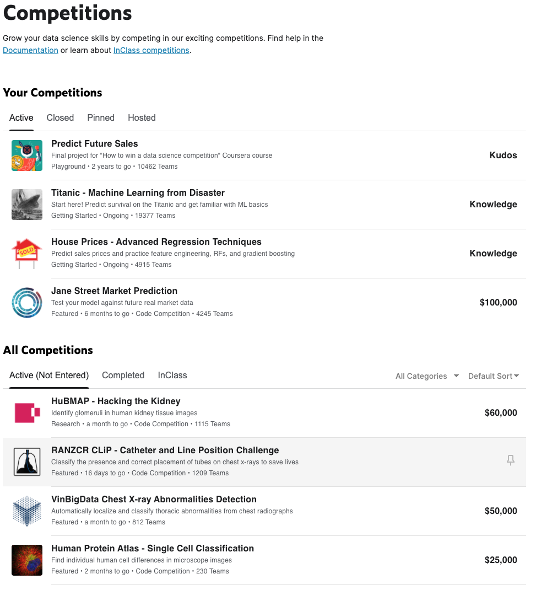
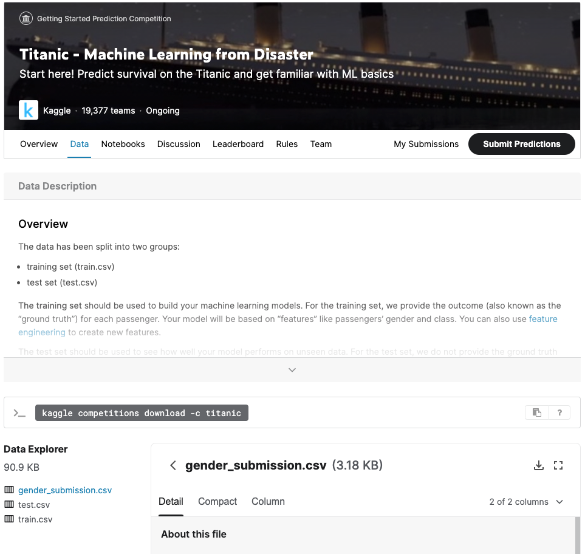
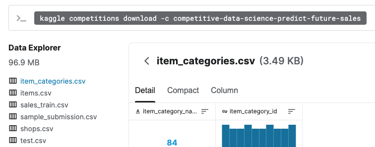

Các bộ dữ liệu sử dụng trong sách¶
Các bộ dữ liệu dạng bảng trong cuốn sách này sẽ được chủ yếu lấy từ các cuộc thi trên Kaggle.

Đặc điểm nhận ra các bộ dữ liệu dạng bảng là các file csv ở phần “Data Explorer” trong tab “Data” như hình dưới đây với cuộc thi Titanic.

Trước khi download các bộ dữ liệu này, bạn cần tạo tài khoản và chấp nhận điều lệ của từng cuộc thi.
Kaggle API¶
Để có thể download và nộp kết quả thông qua cửa sổ dòng lệnh (terminal), bạn cần cài đặt kaggle-api. Chú ý đọc kỹ phần API Credentials để cài đặt API Token cho tài khoản của bạn.
Mỗi cuộc thi sẽ có mã riêng để giúp các bạn thao thác thông qua API này. Câu lệnh để download dữ liệu cho mỗi cuộc thi cũng được cho trong tab “Data” của cuộc thi đó. Ví dụ, để download dữ liệu Titanic, bạn có thể chạy lệnh sau đây:
kaggle competitions download -c titanic
Đoạn lệnh ví dụ dưới đây thực hiện thao tác download bộ dữ liệu Titanic về thư mục data/tianic và giải nén.
!rm -rf ../data/titanic; mkdir -p ../data/titanic
!kaggle competitions download -c titanic -p ../data/titanic;
!cd ../data/titanic; unzip titanic.zip; rm titanic.zip;
Note
Site này được viết trong một jupyter notebook.
Các dấu ! để báo với chương trình rằng đây không phải là một đoạn code python mà là các câu lệnh nên được thực hiện ở cửa sổ dòng lệnh.
!ls ../data/titanic
Sau khi giải nén, thư mục data/titanic chưa ba file: file train.csv chứa thông tin về tập huấn luyện, file test.csv chứa thông tin về tập kiểm tra, và file gender_submission.csv chứa ví dụ mẫu về cấu trúc của file nộp bài để Kaggle tính điểm.
Cấu trúc của mỗi bộ dữ liệu¶
Trong thực tế, các công ty hiếm khi lưu dữ liệu ở dạng csv vì tốc độ truy xuất và lưu trữ chậm. Chúng thường được lưu ở các định dạng phù hợp với dữ liệu lớn hơn như hdfs và được trích xuất ra các dạng phù hợp hơn khi làm việc với các bài toán ML. Trong phạm vi cuốn sách, việc lưu trữ và trích xuất dữ liệu như thế nào sẽ không được đề cập. Dữ liệu được giả sử là đã ở dạng csv và chúng ta sẽ làm việc trực tiếp trên các file csv này.
Dữ liệu cho một bài toán có thể được cho trong một bảng lưu trong một file csv như file train.csv trong bộ dữ liệu Titanic.
Mỗi hàng trong file csv thường ứng với một mẫu dữ liệu với các trường thông tin được phân tách bởi dấu phẩy (,).
Dưới đây là 55 dòng đầu tiên của file train.csv khi nó được mở trong hầu hết các text editor.
!cat ../data/titanic/train.csv | head -5
Để cho dễ nhìn, bạn có thể sử dụng csvlook để quan sát dữ liệu dưới dạng bảng:
!csvlook ../data/titanic/train.csv | head -6 # one additional line as header/content spliter
Thông thường, các mô hình ML được yêu cầu dự đoán một cột sử dụng thông tin trong các cột còn lại.
Trong bài toán Titanic, cột dữ liệu đó là "Survived" thể hiện một hành khách có sống sót sau thảm họa Titanic hay không.
File test.csv có cấu trúc tương tự ngoại trừ việc nó không có cột "Survived", cột này các đội tham gia cần dự đoán.
Đôi khi, cột cần dự đoán không có sẵn trong bảng dữ liệu mà được tính dựa trên các cột khác.
Chẳng hạn, với bảng dữ liệu trên, ta cũng có thể xây dựng bài toán “Dự đoán một hành khách có trên 30 tuổi hay không” dựa trên các cột còn lại.
Tất nhiên, khi đó cột "Age" chỉ có trong tập huấn luyện mà không có trong tập kiểm tra.
Khi xử lý dữ liệu, người kỹ sư ML cần xây dựng thêm một trường dữ liệu nữa có tên, chẳng hạn, "Age_greater_30" dựa vào cột "Age"
Trong hầu hết các trường hợp khác, dữ liệu thường được lưu ở nhiều bảng khác nhau. Ví dụ với cuộc thi Predict Future Sales, dữ liệu được lưu ở nhiều bảng khác nhau:

Dữ liệu chính được lưu trong file sales_train.csv, các thông tin liên quan về cửa hàng và sản phẩm lần lượt được lưu ở shops.csv và items.csv. Ngoài ra, thông tin về mỗi hạng mục của sản phẩm được lưu ở item_categories.csv. Các file test.csv và sample_submision.csv có mục đích chỉ ra những thông tin mà các kỹ sư ML cần dự đoán.
Nhìn chung, mỗi bài toán ML với dự liệu dạng bảng có một cấu trúc dữ liệu khác nhau. Trong mỗi bài toán có thể có nhiều bảng dữ liệu khác nhau. Trong ML với dữ liệu dạng bảng, phần lớn thời gian của các kỹ sư được dành cho việc xử lý các bảng dữ liệu này để tạo ra các đặc trưng dưới dạng số trước khi đưa chúng vào các mô hình ML.